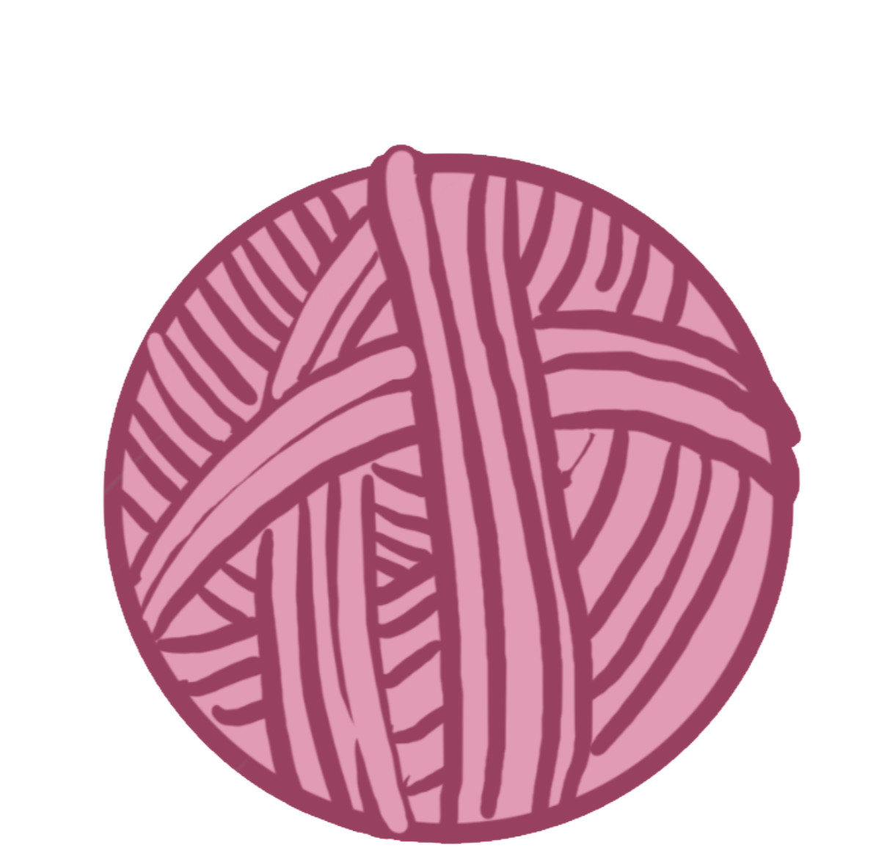
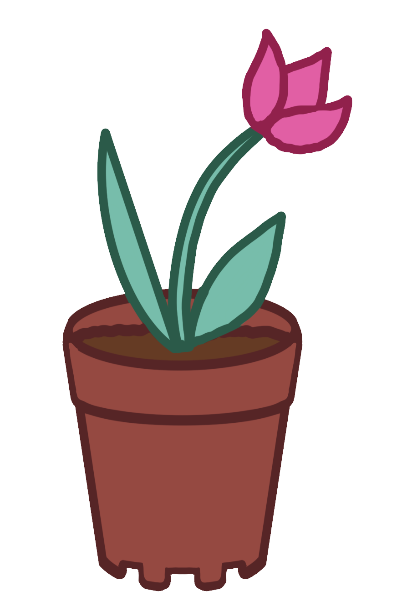

~Chonky Grey~

~Chonky Table~

~Fuzzy Wool~
~Wet Glass~
~Fancy 中国~

~Pot.~
Make it Bling
Adding in more interactive elements, sharing code snippets,
and receiving feedback on our website structures and functionality.
Adding in my work-in-progress:

Originally I had wanted for my icons to be dropped over the table in order for the links to open,
however, due to time constraints, as well as the limitations of my coding,
I chose to leave it temporarily as simple, clickable items.
Fluid Design:
Breaking down elements of our websites into basic building blocks so that we are able to
better understand and restructure it.
Essentially, I focused on constructing the digitally-drawn elements
and images that make up the icons of my website. Such icons include:
~Chonky Grey~
~Chonky Table~
~Fuzzy Wool~
~Wet Glass~
~Fancy 中国~
~Pot.~
As shown, my concept is simple. I really adore cats, and the joys of simplistic but fun stylised layout.
The interactive elements will all be cat-themed, with the homepage being a nod to the stereotypical
behaviour expected of a cat - to push random things off a table. My website will attempt to draw out
the natural curiosity in all of us, while presenting all information in a clear, instinctive way.
Personal Notes & Takeaways:
~This week I was away, and thus don't have as much to add.
~Don't ask me what I'm going to do in the next assignment once I run out of space for more icons on the table...
~I don't want to touch Javascript with a ten-foot-pole at the moment. (That's not to say I won't try anyways.)
~Lots of bugfixing was required with positioning the image of the cat on the table
~Several times, I realised that some of my links were not working due to object arrangement,
therefore motivating me to learn about the "y-index" elements in CSS.
~I still want to improve on my choice of fonts, as well as the overall layout of the website (box, grid, etc.)
~Added a hamburger menu for ease of navigation.
~Added sound video elements